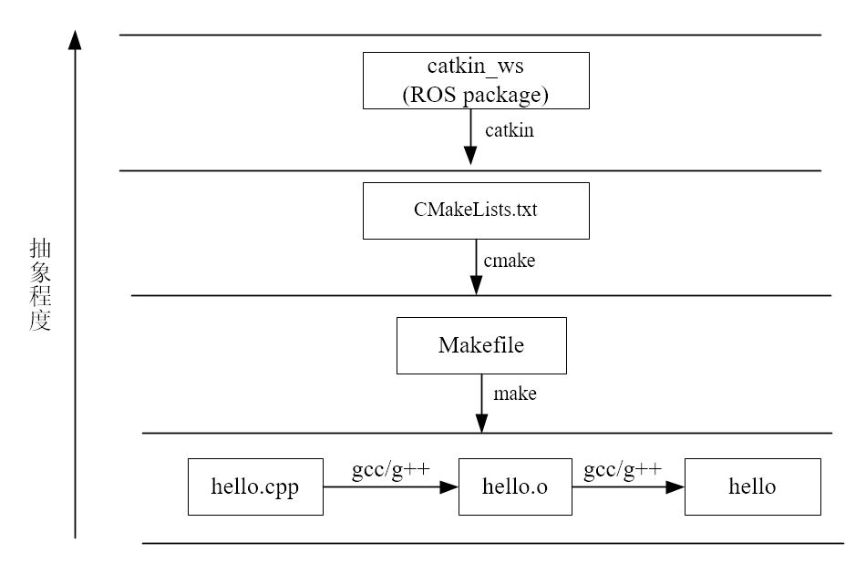

ROS 工作空间
1. Catkin编译系统
源码需要编译、链接等步骤才能生成二进制可执行文件，对于 ROS 等大型项目而言，需要管理项目结构，进行自动化编译等。
Catkin 是 ROS 对 CMake 进行拓展之后的，CMake 能够生成makefile文件，进而能够控制编译的过程
Catkin 编译系统的层级结构如图

1.1. Catkin编译流程
- 在工作空间
catkinws/src/下进行递归查询每一个ROS包 - ROS包中有
package.xml和CMakeLists.txt文件，则根据CMakeLists.txt生成相应的makefile文件 - 再
make进行编译
相当于catkin_make是将cmake与make进行了合并操作，同时提高了跨项目依赖性
1.2. 使用catkin_make进行编译
必须要在工作空间的目录下执行catkin_make，之后需要source命令更新环境变量，否则rosrun无法执行ros包
cd ~/catkinws
catkin_make
source ./devel/setup.bash
2. ROS工作空间结构
─ build
│ ├── catkin
│ │ └── catkin_generated
│ │ └── version
│ │ └── package.cmake
│ ├──
......
│ ├── catkin_make.cache
│ ├── CMakeCache.txt
│ ├── CMakeFiles
│ │ ├──
......
├── devel
│ ├── env.sh
│ ├── lib
│ ├── setup.bash
│ ├── setup.sh
│ ├── _setup_util.py
│ └── setup.zsh
└── src
└── CMakeLists.txt -> /opt/ros/kinetic/share/catkin/cmake/toplevel.cmake
src/用于存放各种package，其中同一类多个功能包可以存放在一个子目录下build/用于存放编译过程中的中间文件，缓存信息等devel/用于存放生成的目标文件，包括可执行文件，静态链接库，动态链接库等
src/下的源代码，经过编译生成中间文件，存在build/下，build/下的文件再经过链接等处理，最后生成可执行文件，库文件等，存放在devel/
2.1. package结构
package是catkin编译的基本单元，一个package可以编译出来多个目标文件（ROS可执行程序、动态静态库、头文件等等）
├── CMakeLists.txt #package的编译规则(必须)
├── package.xml #package的描述信息(必须)
├── src/ #源代码文件
├── include/ #C++头文件
├── scripts/ #可执行脚本
├── msg/ #自定义消息
├── srv/ #自定义服务
├── action/ #自定义服务
├── models/ #3D模型文件
├── urdf/ #urdf文件
├── launch/ #launch文件
├── config/ #参数配置文件
CMakeLists.txt文件和package.xml文件，这两个文件定义了package
CMakeLists.txt定义的是package的编译规则，用到的依赖关系等package.xml定义的是功能包相关的信息，描述package的包名、版本号、作者、依赖等信息src/存放的是源代码文件，主要是cpp源码以及python的module文件include/存放的是hpp头文件scripts/存放的是脚本文件，shell脚本、python脚本等msg/存放的是自定义格式的消息文件（*.msg）srv/存放的是自定义格式的服务文件（*.srv）action/存放的是自定义格式的动作文件（*.action）models/存放机器人或仿真场景的3D模型（.sda, .stl, .dae等）urdf/存放机器人的模型描述（.urdf, .xacro）launch/存放的是启动文件（*.launch）config/存放的是全局配置文件（*.yaml）
2.2. 创建package
创建一个package需要在catkin_ws/src/下，用到catkin_create_pkg命令，相当于脚手架，搭建package框架结构
catkin_create_pkg package depends
其中package是包名，depends是依赖的包名，可以依赖多个软件包。
例如，新建一个package叫做test_pkg，依赖roscpp、rospy、std_msgs(常用依赖)。
catkin_create_pkg test_pkg roscpp rospy std_msgs
此时目录结构为
├── CMakeLists.txt
├── include
│ └── test_pkg
├── package.xml
└── src
catkin_create_pkg默认创建好了CMakeLists.txt和package.xml，并将项目依赖项添加到了package.xml
3. package相关的命令
3.1. rospack
rospack是ros的package管理工具
| rostopic命令 | 作用 |
|---|---|
rospack help |
显示rospack的用法 |
rospack list |
列出本机所有package |
rospack depends [package] |
显示package的依赖包 |
rospack find [package] |
定位某个package |
rospack profile |
刷新所有package的位置记录 |
package缺省则默认为当前目录下的package
3.2. roscd
roscd命令类似与Linux系统的cd，改进之处在于roscd可以直接改变目录到ROS的软件包目录下
3.3. rosls
rosls也可以视为Linux指令ls的改进版，可以直接在任意目录下列出相应ROS软件包的内容
rosls [pacakge]列出pacakge下的文件
3.4. rosdep
rosdep是用于管理ROS package依赖项的命令行工具
| rosdep命令 | 作用 |
|---|---|
rosdep check [pacakge] |
检查package的依赖是否满足 |
rosdep install [pacakge] |
安装pacakge的依赖 |
rosdep db |
生成和显示依赖数据库 |
rosdep init |
初始化/etc/ros/rosdep中的源 |
rosdep keys |
检查package的依赖是否满足 |
rosdep update |
更新本地的rosdep数据库 |
一个较常使用的命令是rosdep install --from-paths src --ignore-src --rosdistro=kinetic -y，用于安装工作空间中src路径下所有package的依赖项（由pacakge.xml文件指定）